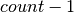
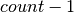
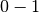
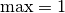
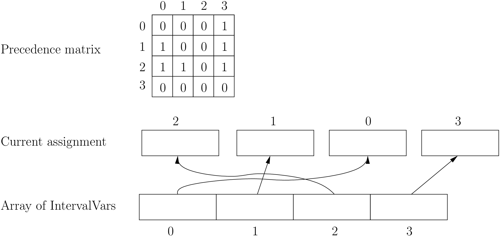
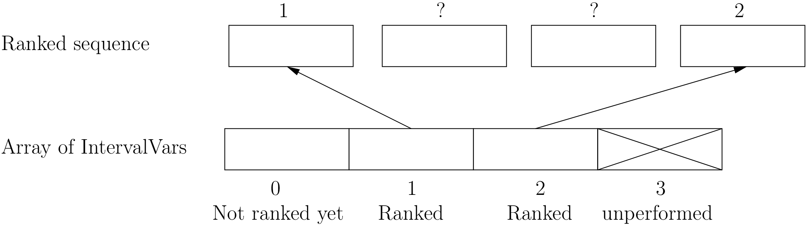
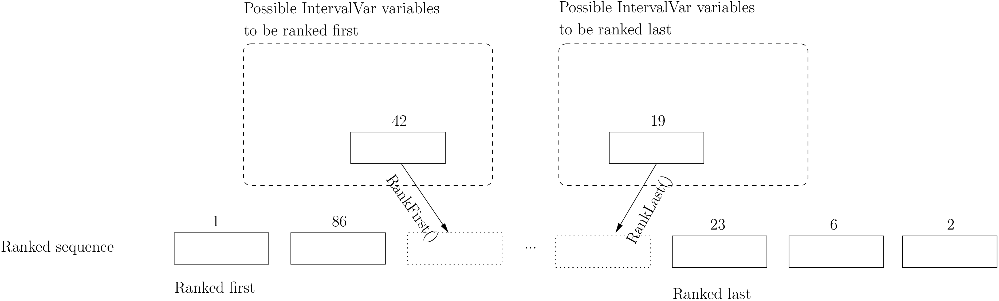
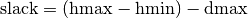

6.3. Scheduling in or-tools
Scheduling problems deal with the allocation of resources and the sequencing of tasks to produce goods and services. The job-shop problem is a good example of such problems.
Constraint programming has been proved successful in solving some scheduling problems with dedicated variables and strategies [ref]. In or-tools, the CP solver offers some variable types (IntervalVars and SequenceVars) and roughly one specialized search strategy with some variants. This part of the CP solver is not quite as developed as the rest of the library and expect more to come. We summarize most of the or-tools features dealing with scheduling in this section.
Warning
This part of the CP Solver is not quite settled yet. In case of doubt, check the code.
6.3.1. Variables
Two new types of variables are added to our arsenal: IntervalVars model tasks and SequenceVars model sequences of tasks on one machine. Once you master these variables, you can use them in a variety of different contexts but for the moment keep in mind this modelling association.
6.3.1.1. IntervalVars
An IntervalVar variable represents an integer interval variable. It is often used in scheduling to represent a task because it has:
- a starting time:
;
- a duration: and
- an ending time: .
, and are IntVar expressions based on the ranges these items can have. You can
retrieve these expressions with the following methods:
- IntExpr* StartExpr();
- IntExpr* DurationExpr();
- IntExpr* EndExpr();
If the corresponding IntervalVar variable is unperformed (see next sub-section), you cannot use these methods. Well, if you do, nothing bad will happen but you will get gibberish as the IntervalVar is no longer updated. These methods have corresponding “safe” versions if you need them.
Warning
Don’t use
- IntExpr* StartExpr();
- IntExpr* DurationExpr();
- IntExpr* EndExpr();
if the corresponding IntervalVar variable is unperformed!
The IntervalVar can be virtually conceptualized[1] as in the next figure:
| [1] | The implementation optimizes different cases and thus doesn’t necessarily correspond to the figure. Read on. |
and you have the following setters and getters:
- virtual int64 StartMin() const = 0;
- virtual int64 StartMax() const = 0;
- virtual void SetStartMin(int64 m) = 0;
- virtual void SetStartMax(int64 m) = 0;
- virtual void SetStartRange(int64 mi, int64 ma) = 0;
- virtual int64 DurationMin() const = 0;
- virtual int64 DurationMax() const = 0;
- virtual void SetDurationMin(int64 m) = 0;
- virtual void SetDurationMax(int64 m) = 0;
- virtual void SetDurationRange(int64 mi, int64 ma) = 0;
- virtual int64 EndMin() const = 0;
- virtual int64 EndMax () const = 0;
- virtual void SetEndMin (int64 m) = 0;
- virtual void SetEndMax (int64 m) = 0;
- virtual void SetEndRange (int64 mi, int64 ma) = 0;
As usual, the IntervalVar class is an abstract base class and several specialized sub-classes exist. For instance, we saw the FixedDurationPerformedIntervalVar class in the previous section (created with MakeFixedDurationIntervalVar()).
To create IntervalVar variables, use the factory methods provided by the solver. For instance:
IntervalVar* Solver:MakeFixedInterval(int64 start,
int64 duration,
const string& name);
IntervalVar* Solver::MakeFixedDurationIntervalVar(int64 start_min,
int64 start_max,
int64 duration,
bool optional,
const string& name);
void Solver::MakeFixedDurationIntervalVarArray(int count,
int64 start_min,
int64 start_max,
int64 duration,
bool optional,
const string& name,
std::vector<IntervalVar*>* array);
The first factory method creates a FixedInterval: its starting time, duration and ending time are all fixed.
MakeFixedDurationIntervalVar() and MakeFixedDurationIntervalVarArray() create respectively an IntervalVar and
an std::vector<IntervalVar*> with count elements. The start_min and start_max parameters give a range
for the IntervalVars to start. The duration is fixed and equal to duration for all the variables.
The optional bool indicates
if the variables can be unperformed or not. When an array is created, the name of its elements are simply name with
their position in the array ( ,
,  , ..., ) appended, like so:
, ..., ) appended, like so:
name0, name1, name2, ... .
Several other factory methods are defined in the file interval.cc.
6.3.1.2. Variables that perform... or not
An important aspect of IntervalVars is optionality. An IntervalVar can be performed or not. If unperformed, then it simply does not exist (and its characteristics are meaningless). An IntervalVar is automatically marked as unperformed when it is not consistent anymore (starting time greater than ending time, duration < 0...). You can get and set if an IntervalVar must, may or cannot be performed with the following methods:
virtual bool MustBePerformed() const = 0;
virtual bool MayBePerformed() const = 0;
bool CannotBePerformed() const { return !MayBePerformed(); }
bool IsPerformedBound() {
return MustBePerformed() == MayBePerformed();
}
virtual void SetPerformed(bool val) = 0;
As for the starting time, the ending time and the duration of an IntervalVar variable, its “performedness” is encapsulated in an IntExpr you can query with:
IntExpr* PerformedExpr();
The corresponding IntExpr acts like a  IntervalVar[2].
If its minimum value is , the corresponding IntervalVar variables must be performed. If its
maximal value is , the corresponding IntervalVar is unperformed and if
and , the corresponding IntervalVar might be performed.
| [2] | Actually, it is an IntervalVar! |
The use of an IntExpr allows expressiveness and the use of sophisticated constraints.
As we have seen, if the IntervalVar is unperformed, we cannot use StartExpr(), DurationExpr() and EndExpr(). You can however call their safe versions:
- IntExpr* SafeStartExpr(int64 unperformed_value);
- IntExpr* SafeDurationExpr(int64 unperformed_value);
- IntExpr* SafeEndExpr(int64 unperformed_value)
If the variable is performed, these expressions will return their exact values, otherwise they will return “obvious” values (see the file sched_expr.cc for more details). For instance:
IntExpr * start_exp = interval_var->SafeStartExpr(-1);
IntVar * start_var = start_exp->Var();
LG << "Minimum start value is " << start_var->Min();
will give you the exact minimal starting value if the variable is performed, the minimum between its minimal value and -1 if the variable may be performed and -1 if the variable is unperformed.
6.3.1.3. SequenceVars
A SequenceVar variable is a variable which domain is a set of possible orderings of IntervalVar variables. Because it allows the ordering of IntervalVar (tasks), it is often used in scheduling. And for once it is not an abstract class! This is because these variables are among the less refined variables in or-tools. They also have the least number of methods.
Basically, this class contains an array of IntervalVars and a precedence matrix indicating how the IntervalVars are ranked. You can conceptualize[3] this class as depicted in the following figure:
where the precedence matrix mat is such that mat(i,j) = 1 if i is ranked before j.
The IntervalVar are often given by their indices in the array of IntervalVars.
| [3] | This looks very much like the actual implementation. The array is a scoped_array<IntervalVar*> and the precedence matrix is given by a scoped_ptr<RevBitMatrix>. The actual class contains some more data structures to facilitate and optimize the propagation. |
6.3.1.4. Ranked IntervalVars
Ranked IntervalVars are exactly that: already ranked variables in the sequence. IntervalVars can be ranked at the beginning or at the end of the sequence in the SequenceVar variable. unperformed IntervalVar can not be ranked[4]. The next figure illustrates this:
IntervalVar variables 1 and 2 are ranked (and performed) while IntervalVar variable 0 may be performed but is not performed yet and IntervalVar variable 3 is unperformed and thus doesn’t exist anymore.
To rank the IntervalVar variables, we say that we rank them first or last. First and last IntervalVar variables must be understood with respect to the unranked variables:
- to rank first an IntervalVar variable means that this variable will be ranked before all unranked variables and
- to rank last an IntervalVar variable means that this variable will be ranked after all unranked variables.
| [4] | Thus, unranked variables are variables that may be performed. Yeah, three-states situations that evolves with time are nastier than a good old Manichean one. |
6.3.1.5. Public methods
All the following methods are updated with the current values of the SequenceVar. unperformed variables - unless explicitly stated in one of the arguments - are never considered.
First, you have the following getters:
- void DurationRange(int64* const dmin, int64* const dmax) const:
Returns the minimum and maximum duration of the IntervalVar variables:
- dmin is the total (minimum) duration of mandatory variables (those that must be performed) and
- dmax is the total (maximum) duration of variables that may be performed.
- void HorizonRange(int64* const hmin, int64* const hmax) const:
Returns the minimum starting time hmin and the maximum ending time hmax of all IntervalVar variables that may be performed.
- void ActiveHorizonRange(int64* const hmin, int64* const hmax) const:
Same as above but for all unranked IntervalVar variables.
- int Ranked() const:
Returns the number of IntervalVar variables already ranked.
- int NotRanked() const:
Returns the number of not-unperformed IntervalVar variables that may be performed and that are not ranked yet.
- void ComputeStatistics(...):
Computes the following statistics:
void ComputeStatistics(int* const ranked, int* const not_ranked, int* const unperformed) const;
ranked + not_ranked + unperformed is equal to size().
- IntervalVar* Interval(int index) const:
Returns the index th IntervalVar from the array of IntervalVars.
- IntVar* Next(int index) const:
To each IntervalVar corresponds an associated IntVar that represents the “ranking” of the IntervalVar in the ranked sequence. The Next() method returns this IntVar variable for the index th IntervalVar in the array of IntervalVars.
For instance, if you want to know what is the next IntervalVar after the 3 rd IntervalVar in the sequence, use the following code:
SequenceVar * seq = ...; ... IntVar * next_var = seq->Next(2); if (next_var->Bound()) { // OK, ranked LG << "The next IntervalVar after the 3rd IntervalVar in " << "the sequence is " << next_var->Value() - 1; }
As you can see, there is a difference of one between the returned value and the actual index of the IntervalVar in the array of IntervalVars variables.
- int size() const:
Returns the number of IntervalVar variables.
- void FillSequence(...):
a getter filling the three std::vector<int> of first ranked, last ranked and unperformed variables:
void FillSequence(std::vector<int>* const rank_first, std::vector<int>* const rank_lasts, std::vector<int>* const unperformed) const;
The method first clears the three std::vectors and fills them with the IntervalVar number in the sequence order of ranked variables. If all variables are ranked, rank_first will contain all variables and rank_last will contain none. unperformed will contain all the unperformed IntervalVar variables. rank_first[0] corresponds to the first IntervalVar of the sequence while rank_last[0] corresponds to the last IntervalVar variable of the sequence, i.e. the IntervalVar variables ranked last are given in the opposite order.
- ComputePossibleFirstsAndLasts(...):
a getter giving the possibilities among unranked IntervalVar variables:
void ComputePossibleFirstsAndLasts( std::vector<int>* const possible_firsts, std::vector<int>* const possible_lasts);
This method computes the set of indices of IntervalVar variables that can be ranked first or last in the set of unranked activities.
Second, you have the following setters:
- void RankFirst(int index):
Ranks the index th IntervalVar variable in front of all unranked IntervalVar variables. After the call of this method, the IntervalVar variable is considered performed.
- void RankNotFirst(int index):
Indicates that the index th IntervalVar variable will not be ranked first among all currently unranked IntervalVar variables.
- void RankLast(int index):
Ranks the index th IntervalVar variable first among all unranked IntervalVar variables. After the call of this method, the IntervalVar variable is considered performed.
- void RankNotLast(int index):
Indicates that the index th IntervalVar variable will not be ranked first among all currently unranked IntervalVar variables.
- void RankSequence(...):
a setter acting on three std::vector<int> of first, last and unperformed variables:
void RankSequence(const std::vector<int>& rank_firsts, const std::vector<int>& rank_lasts, const std::vector<int>& unperformed);
Ranks the IntervalVars in the given order. Again, the rank_firsts std::vector<int> gives the IntervalVars in order (rank_firsts[0] if the first ranked IntervalVar and so on) and the rank_lasts std::vector<int> gives the IntervalVar in the opposite order (rank_lasts[0] is the last IntervalVar and so on). All IntervalVar variables in the unperformed std::vector<int> will be marked as such and all IntervalVar variables in the rank_firsts and rank_lasts std::vector<int> will be marked as performed.
6.3.2. Constraints on IntervalVars
Most of the common constraints on IntervalVars are implemented in the library.
6.3.2.1. IntervalUnaryRelation constraints
You can specify a temporal relation between an IntervalVar t and an integer d:
- ENDS_AFTER: t ends after d, i.e. End(t) >= d;
- ENDS_AT: t ends at d, i.e. End(t) == d;
- ENDS_BEFORE: t ends before d, i.e. End(t) <= d;
- STARTS_AFTER: t starts after d, i.e. Start(t) >= d;
- STARTS_AT: t starts at d, i.e. Start(t) == d;
- STARTS_BEFORE: t starts before d, i.e. Start(t) <= d;
- CROSS_DATE: STARTS_BEFORE and ENDS_AFTER at the same time, i.e. d is in t;
- AVOID_DATE: STARTS_AFTER or ENDS_BEFORE, i.e. d is not in t.
The possibilities are enclosed in the UnaryIntervalRelation enum. The corresponding constraints are IntervalUnaryRelation constraints and the factory method is:
Constraint* Solver::MakeIntervalVarRelation(IntervalVar* const t,
Solver::UnaryIntervalRelation r,
int64 d);
6.3.2.2. BinaryIntervalRelation constraints
You can specify a temporal relation between two IntervalVars t1 and t2:
- ENDS_AFTER_END: t1 ends after t2 ends, i.e. End(t1) >= End(t2);
- ENDS_AFTER_START: t1 ends after t2 starts, i.e. End(t1) >= Start(t2);
- ENDS_AT_END: t1 ends at the end of t2, i.e. End(t1) == End(t2);
- ENDS_AT_START: t1 ends at t2‘s start, i.e. End(t1) == Start(t2);
- STARTS_AFTER_START: t1 starts after t2 starts, i.e. Start(t1) >= Start(t2);
- STARTS_AFTER_END: t1 starts after t2 ends, i.e. Start(t1) >= End(t2);
- STARTS_AT_END: t1 starts at t2‘s end, i.e. Start(t1) == End(t2);
- STARTS_AT_START: t1 starts when t2 starts, i.e. Start(t1) == Start(t2);
- STAYS_IN_SYNC: STARTS_AT_START and ENDS_AT_END combined together.
These possibilities are enclosed in the BinaryIntervalRelation enum and the factory method is:
Constraint* Solver::MakeIntervalVarRelation(IntervalVar* const t1,
Solver::BinaryIntervalRelation r,
IntervalVar* const t2)
6.3.2.3. TemporalDisjunction constraints
TemporalDisjunction constraints ensure that two ÌntervalVar` variables are temporally disjoint, i.e. they cannot be processed at the same time.
To create such a constraint, use:
solver = ...
...
IntervalVar * const t1 = ...
IntervalVar * const t2 = ...
...
Constraint * ct = solver.MakeTemporalDisjunction(t1, t2);
Maybe you can relate the decision on what has to happen first to the value an IntVar takes:
...
IntVar * const decider = ...
Constraint * ct = solver.MakeTemporalDisjunction(t1, t2, decider)
If decider takes the value 0, then t1 has to happen before t2, otherwise it is the contrary. This constraint works the other way around too: if t1 happens before t2, then the IntVar decider is bound to 0 and else to a positive value (understand 1 in this case).
6.3.2.4. DisjunctiveConstraint constraints
DisjunctiveConstraint constraints are like TemporalDisjunction constraints but for an unlimited number of IntervalVar variables. Think of the DisjunctiveConstraint as a kind of AllDifferent constraints but on IntervalVars.
The factory method is:
Constraint * MakeDisjunctiveConstraint (
const std::vector< IntervalVar * > &intervals);
In the current implementation, the created constraint is a FullDisjunctiveConstraint which means that the IntervalVars will be disjoint.
The DisjunctiveConstraint class itself is a pure abstract class. Subclasses must implement the following method:
virtual SequenceVar* MakeSequenceVar() = 0;
This method creates a SequenceVar containing the “rankable”[5] IntervalVars given in the intervals std::vector<IntervalVar *>.
SequenceVar variables are so closely tied to a sequence of IntervalVars that obeys a DisjunctiveConstraint constraint that it is quite natural to find such a method. In the current implementation, it is the only available method to create a SequenceVar variable!
Warning
The use of the MakeSequenceVar() method of a DisjunctiveConstraint constraint is the only way to create a SequenceVar variable in the current implementation. This might change in the future.
| [5] | You remember that unperformed IntervalVars are “non existing”, don’t you? And yes, we know that the adjective “rankable” doesn’t exist... |
6.3.2.5. CumulativeConstraint constraints
This constraint forces, for any integer t, the sum of the demands corresponding to an interval containing t to not exceed the given capacity.
Intervals and demands should be vectors of equal size.
Demands should only contain non-negative values. Zero values are supported, and the corresponding intervals are filtered out, as they neither impact nor are impacted by this constraint.
Here is one factory method with a limited static capacity:
Constraint* MakeCumulative(const std::vector<IntervalVar*>& intervals,
const std::vector<int64>& demands,
int64 capacity,
const string& name);
If you need more flexibility, use the following factory method:
Constraint* MakeCumulative(const std::vector<IntervalVar*>& intervals,
const std::vector<int64>& demands,
IntVar* const capacity,
const string& name);
Here the capacity is modelled by an IntVar. This variable is really a capacity in the sense that it is this variable that determines the capacity and it will not be adjusted to satisfy the CumulativeConstraint constraint.
6.3.3. Constraints on SequenceVars
There are none for the time being. Nobody prevents you from implementing one though.
6.3.4. DecisionBuilders and Decisions for scheduling
This sub-section is going to be very brief. Indeed, even if room has been made in the code to welcome several alternative strategies, at the moment of writing (revision r2502, January 11 th 2013) there is “only one real” strategy implemented to deal with IntervalVars and SequenceVars. The RankFirstIntervalVars DecisionBuilder for SequenceVars and the SetTimesForward DecisionBuilder for IntervalVars both try to rank the IntervalVars one after the other starting with the first “available” ones.
When we’ll implement different strategies, we will update the manual. If you’re curious about the implementation details, we refer you to the code (mainly to the file constraint_solver/sched_search.cc).
If you need specialized DecisionBuilders and Decisions, you now know the inner working of the CP solver well enough to construct ones to suit your needs. Although nothing prevents you from creating tools that mix IntVars, IntervalVars and SequenceVars, we strongly advice you to keep different types of variables separated and combine different phases together instead.
6.3.4.1. IntervalVars
For IntervalVar variables, there is only one strategy implemented even if there are three entries in the IntervalStrategy enum:
- INTERVAL_DEFAULT = INTERVAL_SIMPLE = INTERVAL_SET_TIMES_FORWARD:
- The CP solver simply schedules the IntervalVar with the lowest starting time (StartMin()) and in case of a tie, the IntervalVar with the lowest ending time (StartMax()).
The DecisionBuilder class is the SetTimesForward class. It returns a ScheduleOrPostpone Decision in its Next() method. This Decision fixes the starting time of the IntervalVar to its minimum starting time (StartMin()) in its Apply() method and, in its Refute() method, delays the execution of the corresponding task by 1 unit of time, i.e. the IntervalVar cannot be scheduled before StartMin() + 1.
You create the corresponding phase with the good old MakePhase factory method:
DecisionBuilder * MakePhase (
const std::vector< IntervalVar * > &intervals,
IntervalStrategy str);
6.3.4.2. SequenceVars
For SequenceVar variables, there are basically two ways of choosing the next SequenceVar to rank its IntervalVars:
- SEQUENCE_DEFAULT = SEQUENCE_SIMPLE = CHOOSE_MIN_SLACK_RANK_FORWARD:
The CP solver chooses the SequenceVar which has the fewest opportunities of manoeuvre, i.e. the SequenceVar for which the horizon range (hmax - hmin, see the HorizonRange() method above) is the closest to the total maximum duration of the IntervalVars that may be performed (dmax in the DurationRange() method above). In other words, we define the slack to be

and we choose the SequenceVar with the minimum slack. In case of a tie, we choose the SequenceVar with the smallest active horizon range (see ahmin in the ActiveHorizonRange() method above).
Once the best SequenceVar variable is chosen, the CP solver takes the rankable IntervalVar with the minimum starting time (StartMin()) and ranks it first.
- CHOOSE_RANDOM_RANK_FORWARD:
- Among the SequenceVars for which there are still IntervalVars to rank, the CP solver chooses one randomly. Then it randomly chooses a rankable IntervalVar and ranks it first.
SEQUENCE_DEFAULT, SEQUENCE_SIMPLE, CHOOSE_MIN_SLACK_RANK_FORWARD and CHOOSE_RANDOM_RANK_FORWARD are given in the SequenceStrategy enum.
To create these search strategies, use the following factory method:
DecisionBuilder* Solver::MakePhase(
const std::vector<SequenceVar*>& sequences,
SequenceStrategy str);
In both cases, we use the RankFirstIntervalVars class as DecisionBuilder. Its Next() method returns a RankFirst Decision that ranks first the selected IntervalVar in its Apply() method and doesn’t rank it first in its Refute() method. We are thus assured to visit the complete search tree... of solutions of ranked IntervalVars if needed. After the ranking of IntervalVars, the schedule is still loose and any IntervalVar may have been unnecessarily postponed. This is so important that we use our warning box:
Warning
After the ranking of IntervalVars, the schedule is still loose and any IntervalVar may have been unnecessarily postponed
If for instance, you are interested in the makespan, you might want to schedule each IntervalVar at its earliest start time. As we have seen in the previous section, this can be accomplished by minimizing the objective function corresponding to the ending times of all IntervalVars:
IntVar * objective_var = ...
...
DecisionBuilder* const sequence_phase = solver.MakePhase(
all_sequences,
Solver::SEQUENCE_DEFAULT);
...
DecisionBuilder* const obj_phase = solver.MakePhase(objective_var,
Solver::CHOOSE_FIRST_UNBOUND,
Solver::ASSIGN_MIN_VALUE);
and then compose the two DecisionBuilders sequentially:
DecisionBuilder* const main_phase = solver.Compose(sequence_phase,
obj_phase);
By the way, the MakePhase() method has been optimized when the phase only handles one or a few variables (up to 4), like in the above example for the obj_phase.
6.3.5. DependencyGraph
If you want to add more specific temporal constraints, you can use a data structure specialized for scheduling: the DependencyGraph. It is meant to store simple temporal constraints and to propagate efficiently on the nodes of this temporal graph. One node in this graph corresponds to an IntervalVar variable. You can build constraints on the start or the ending time of the IntervalVar nodes.
Consider again our first example (first_example_jssp.txt) and let’s say that for whatever reason we want to impose that the first task of job 2 must start at least after one unit of time after the first task of job 1. We could add this constraint in different ways but let’s use the DependencyGraph:
solver = ...
...
DependencyGraph * graph = solver.Graph();
graph->AddStartsAfterEndWithDelay(jobs_to_tasks[2][0],
jobs_to_tasks[1][0], 1);
That’s it!
Here is the output of an optimal solution found by the solver:
Objective value: 13
Machine_0: Job 1 (0,2) Job 0 (2,5)
Machine_1: Job 2 (3,7) Job 0 (7,9) Job 1 (9,13)
Machine_2: Job 1 (2,3) Job 2 (7,10) Job 0 (10,12)
As you can see, the first task of job 2 starts at 3 units of time and the first task of job 1 ends at 2 units of time.
Other methods of the DependencyGraph include:
- AddStartsAtEndWithDelay()
- AddStartsAfterStartWithDelay()
- AddStartsAtStartWithDelay()
The DependencyGraph and the DependencyGraphNode classes are declared in the constraint_solver/constraint_solveri.h header.
Google or-tools |
User's Manual
Google search
Welcome
Tutorial examples
Current chapter
6. Local search: the job-shop problem
Previous section
6.2. An implementation of the disjunctive model
Next section
6.4. What is local search (LS)?